本文最后更新于：2020年6月25日 晚上
Git和GitHub–学习笔记(包含Git视频)
Lesson1 Git概述
NO1.1 Git简介
什么是Git呢？Git其实就是一个工具，用于控制代码版本的工具。
Git：
定义：是一个开源的分布式版本控制系统，用于敏捷高效地处理任何或大或小的项目；
Git和Svn的区别：
Git是分布式的，SVN不是。这是Git和其它非分布式的版本控制系统(如，SVN，CVS等)最核心的区别；
Git把内容按元数据方式存储，而SVN是按文件。所有的资源控制系统都是把文件的元信息隐藏在一个类似.svn、.cvs等的文件夹里；
Git分支和SVN的分支不同。分支在SVN中一点都不特别，其实它就是版本库中的另外一个目录；
Git没有一个全局的版本号，而SVN有。目前为止这是跟SVN相比，Git缺少的最大的一个特征；
Git的内容完整性要优于SVN。Git的内容存储使用的是SHA-1哈希算法，这能确保代码内容的完整性，确保在遇到磁盘故障和网络问题时降低对版本库的破坏。
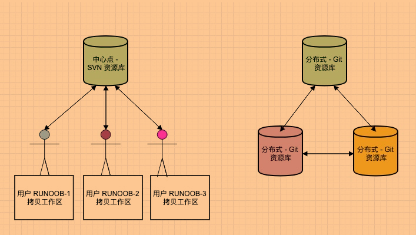
Git结构可以抽象成几个区域：
工作区：即workspace，也就是你在电脑里能看到的目录，其实就是自己写的文件；
暂存区(也叫索引)：即stage，也就是我们写好的代码文件你肯定要暂时保存起来吧(因为极大可能要修改或提交到版本库等等，常做变动)，就存放在这里，一般存放在”.git”目录下的index文件中，也就是”.git/index”中，所以我们把暂存区也叫做索引(index)；
版本库：存放已经提交的数据，执行git push命令的时候，就是把这个区的数据push到远程git仓库。
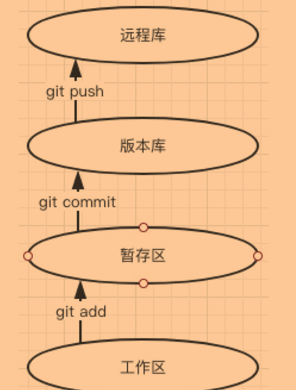
- Git的工作流程：
- 写代码(修改工作区)；
- 把写好的或修改的文件加入到暂存区，使用命令：git add 文件名；
- 把暂存区的修改提交到版本库中，使用命令：git commit；
- 此时本地版本库就跟远程仓库(就是我们常用的GitHub、码云、GitLab等等)状态不同了，把版本库推送到远程仓库保持同步：git push。
Git安装：
Git安装比较简单，按照一般的安装步骤操作即可，这里不做过多的叙述。安装完成后，对着桌面，单机鼠标右键，出现如下图所示，表示安装完成。
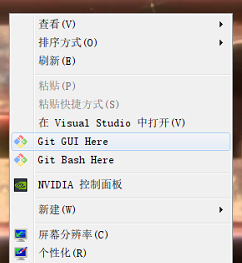
说明：Git Bash：是Unix与Linux风格的命令行，也是使用的最多，推荐的最多的；Git GUI：图形界面的Git，不建议初学者使用，因为无法熟悉常用Git命令。
NO1.2 GitHub简介
GitHub、码云…等等，都是用来保存和管理代码。
GithHub：
定义：也叫代码托管中心，即用来维护Git的远程仓库的，说白了就是维护我们提交到远程仓库的代码。可分为：
局域网环境，该环境下有：GitLab服务器；
互联网环境，该环境下有：GitHub、码云。
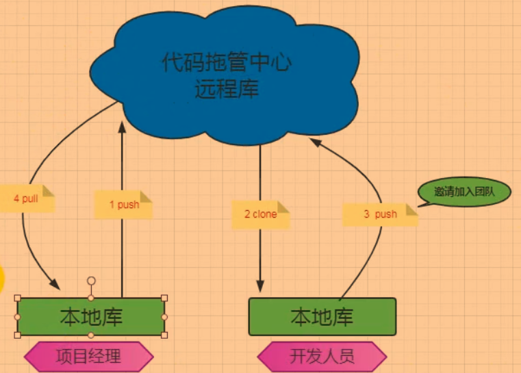
说明：执行流程解释：项目经理将项目，经过在工作区编写和修改、临时存入暂存区等待提交、提交到版本库(也叫版本库)中、最后再由版本库交给代码托管中心进行管理，体现了团队合作的流程。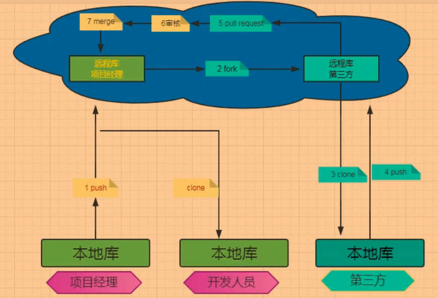
说明：执行流程解释：和上面的执行流程基本一致，不同的是，多了一个第三方可以对目标项目进行修改等操作，当然在发送给第三方前会将项目复制一份给第三方，然后等到第三方提交的时候，会进行审核，毕竟不是什么代码都能加进某个项目中的；审核通过，才会将第三方修改的代码加入进项目中。如，Linux就是部分开源。
Lesson2 Git基础
NO2.1 Git常用命令
我们使用Git，将我们编写好的代码上传到GitHub进行统一管理。
- 创建版本库：
git init：在当前目录下创建版本仓库。因为Git的很多命令都需要在Git的仓库中运行，所以该命令是使用Git的第一个命令；
设置签名：
作用：签名的作用是标识不同开发人员的身份，主要是名称和邮箱。不过这签名和代码托管中心没有任何关系，如果没有设置签名，那么有可能在使用命令时，系统由于分辨不出身份而导致出错。签名有两种级别：
- 项目级别：即仅仅在当前版本库范围内有效；
git config user.name xxx和git config user.email xxx：分别设置开发者的名称和邮箱。
- 系统级别：即登录当前操作系统的用户，这个范围内有效(常用的是这个级别)。
git config --global user.name xxx和git config --global user.emailxxx：分别设置开发者的名称和邮箱。注意：两个级别的签名信息都有时，根据就近原则，会以项目级别的为准。
- 项目级别：即仅仅在当前版本库范围内有效；
cat ~/.gitconfig：查看自己设置的Git用户名称和邮箱。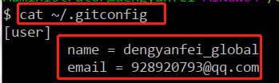
查看状态：
git status [选项]：用于显示工作目录和暂存区的状态，但不会显示已经提交到项目历史中去的消息。选项如下：-s：以简短模式查看本地仓库的状态，会显示两列，第一列是文件的状态，第二列是对应的文件；其中文件状态有：A表示新增，M表示修改，D表示删除，??表示未添加到Git中。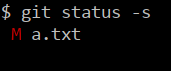
添加：
git add 文件名 [选项]：用于将工作区中指定的文件存添加暂存区；如果文件名前面不加路径，默认是在当前路径下找该文件。选项如下：-u/--update：添加所有修改、已删除的文件到暂存区中；-A/--all：添加所有修改、已删除、新增的文件到暂存区中；-i/--interactive：查看所有修改、已删除但没有提交的文件，进入一个子命令系统。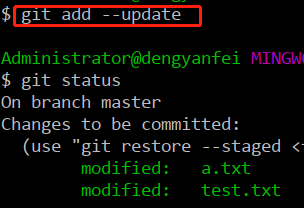
提交：
git commit [选项]：用于将暂存区中的文件，提交到版本库，除了文件以外，修改文件内容的用户和日志信息也会一起存储在这个提交中。选项如下：-m：格式为-m “本次提交的描述信息”，即将暂存区文件提交到版本库，并添加这一次提交的描述信息；如果不添加该参数，那么在提交时，会给你一个vim文本编辑器来编辑你要添加时的message；-a：将所有已跟踪文件中(即曾经有提交到版本库的记录)的执行修改或删除操作的文件都提交到本地仓库，即使它们没有经过git add添加到暂存区；但是新添加的文件，且没有提交过版本库的文件还是要先add再commit才行，即这些文件不适用-a参数；--amend：修改上次提交的描述信息。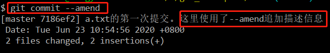
- 删除：
git rm [选项] 文件名：用于同时从工作区和索引(也就是暂存区)中删除文件。选项如下：--cached：用于将暂存区的文件恢复到工作区，也就是从暂存区中删除这个文件，但是本地文件还存在，只是不想该文件再被版本控制；
查看日志：
git log [选项]：用于显示提交的所有日志信息，也就是你提交过的历史版本信息；但是无法查看已删除的commit记录。选项如下：-n：显示最新提交的n条记录；commitID：显示从第一次提交到指定commitID为止的所有提交的记录；--oneline：用一行来显示提交的日志信息；
git reflog：查看所有分支的所有操作记录(包括commit和reset的操作)，包括已经被删除的commit记录。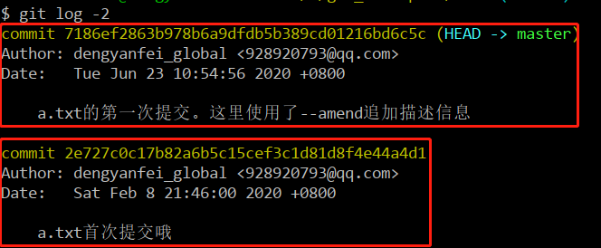
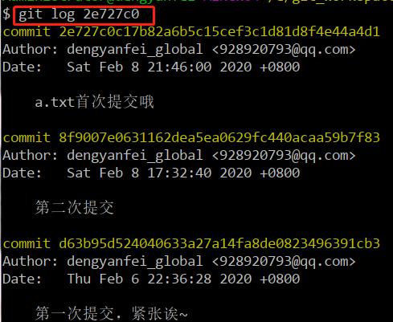
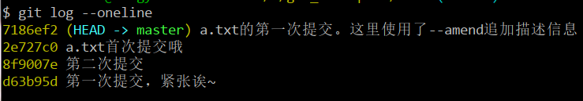
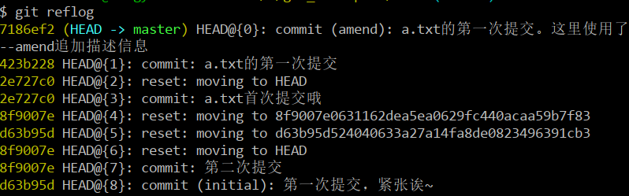
版本回退：
git reset [选项]：将暂存区的文件撤回工作区，默认撤回的是HEAD指向的文件。选项如下：--soft commitID：将HEAD指向的文件的版本库版本移动到指定的版本。只移动版本库的HEAD指针，即版本库的版本落后了，但是暂存区和工作区的文件版本没有变更，也就是说，此时暂存区和工作区的版本要比版本库新一些；--mixed commitID：将HEAD指向的文件的版本库、暂存区(两个区)的版本都移动到指定的版本。只移动版本库和暂存区的HEAD，即此时版本库和暂存区的版本都落后了，而工作区的版本却是最新的；--hard commitID：将HEAD指向的文件的版本库、暂存区、工作区(三个区)的版本移动到指定的版本，但跳到该版本以后，其版本之后添加的文件内容将不会存在。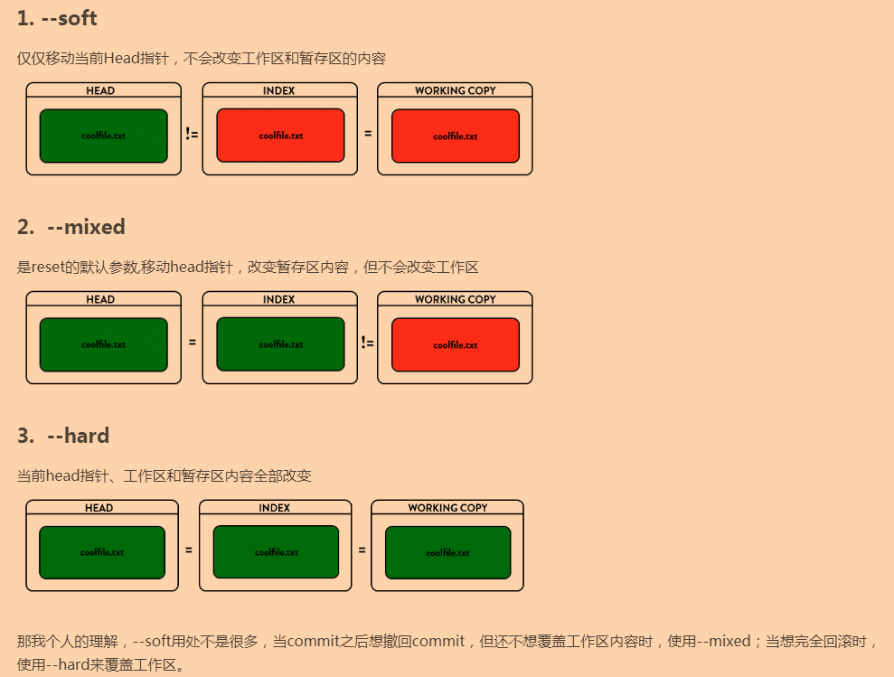
比较文件：
git diff [选项] 文件名：用于比较两个区域中的文件差异，默认比较的是工作区和暂存区；另外如果不带文件名进行比较，默认是将当前目录下所有文件与暂存区的版本进行比较(前提是要工作区里有修改过的文件)。选项如下：HEAD：比较的是暂存区和版本库里的文件。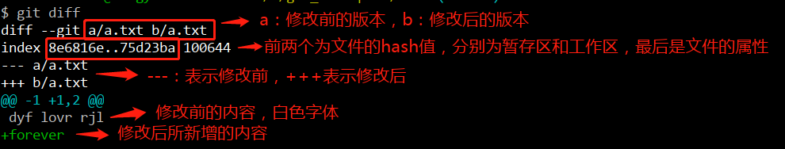
NO2.2 Git分支和分支常用命令
分支，顾名思义，就是从主干上分化出来的一部分，但不会影响主干(即master)。
- 分支：
- 定义：Git分支，其实就是将主干代码的副本，然后不同的开发人员在各自创建的分支上进行开发工作，最后再合并，既没有影响到原来主干的代码进度，开发人员也完成了他们的任务；
- 优点：
- 可以同时并行多个开发任务；
- 就是分支开发失败，也不会影响主干。
查看、创建、修改、删除分支：
git branch [选项]：不添加参数选项，则列出本地所有的分支，当前所在分支以“*”标出。选项如下：-v：列出本地所有的分支，当前所在分支以 “*” 标出，并显示最后一次提交；分支名：创建一个新的分支，新的分支基于上一次提交建立；-m 原分支名称 新分支名称：修改分支名称。如果不指定原分支名称则默认为当前所在分支；-M 原分支名称 新分支名称：强制修改分支名称。如果不指定原分支名称则默认为当前所在分支；-d 分支名称：删除指定的本地分支；-D 分支名称：强制删除指定的本地分支。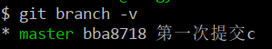
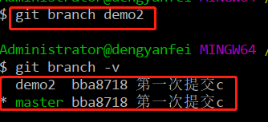
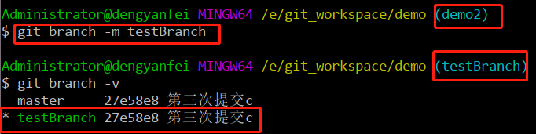
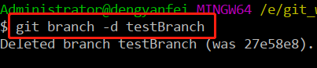
切换分支和替换工作区文件：
git checkout [选项]：该命令主要有两个功能；选项如下：分支名：切换到已存在的指定分支中去；-b 分支名：创建并切换到指定的分支，保留所有的提交记录。等同于git branch和git checkout两个命令合并；--orphan：创建并切换到指定的分支，删除所有的提交记录；文件名：将暂存区的指定文件，替换掉当前工作区的指定文件，即同一个文件下，当前工作区里文件的内容，被暂存区里的文件内容替换掉了，也就是重写了工作区的文件内容。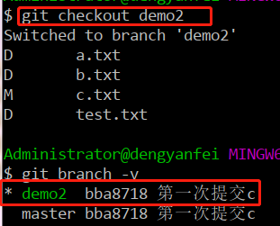
合并分支：
git merge 分支名：首先要切换到被合并的分支下(一般都是主干)，把指定的分支合并到当前所在的分支下；另外如果从远程仓库拉取了文件的最新版本后，需要将该版本和本地工作区的文件进行合并，则使用：git merge 远程仓库别名/分支名。注意：当合并分支时出现合并冲突，我们需要转为手动合并：即在协商之后决定保留冲突中的哪一部分内容，最后需要git add和git commit -m "提交信息"这两个命令来结束合并状态即可。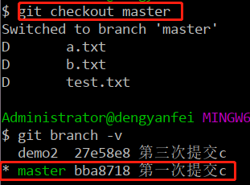
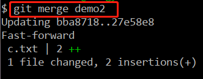
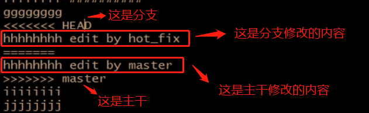
NO2.3 Git版本库与GitHub(代码托管中心)
Git只是用来与远程仓库互动的一个工具，我们还需要与代码托管中心进行关联。
关联Git版本库与GitHub远程仓库，并push文件的步骤：
注册GitHub，并登陆到GitHub上，创建一个public或者private权限的自定义名称的仓库，这个仓库就是我们用来存储从Git版本库上传的代码文件所使用的仓库；
在Git上，创建一个新的文件夹作为版本库，使用git init命令即可；然后编写一个代码文件，按顺序使用git add和git commit命令分别上传到暂存库、版本库中；
关联版本库和远程仓库，也就是告诉版本库，把我想要存储的代码文件发送到哪里去。使用如下命令进行操作：
git remote [选项]：列出已经存在的远程仓库；选项如下：-v/--verbose：列出远程仓库的详细信息，在别名后面列出URL地址；add 远程仓库的别名 远程仓库的URL地址：添加远程仓库，即将当前的版本库与指导的远程仓库进行关联；rename 原远程仓库的别名 新的别名：修改远程仓库的别名；remove 远程仓库的别名：删除指定名称的远程仓库；set-url 远程仓库的别名 新的远程仓库URL地址：修改远程仓库的URL地址。
关联成功以后，就可以push代码文件了。使用如下命令进行操作：
git push [选项]：该命令用来将本地库中的文件推送到远程仓库中去。选项如下；注意：这里可能会出现一个异常，你的远程仓库有个文件README.md(也可能没有这个文件)，但是本地仓库却没有，就会出现“failed to push some refs to...”这种情况，所以无论远程仓库中是否有README.md文件，第一次push都需要把这个文件push到你的远程仓库中去，在当前目录下直接创建README.md文件，然后使用命令：git push -u 你自己的远程仓库别名 master，其中master是你每个新建远程仓库的默认分支，输入后，会要你输入登录到GitHub的账号和密码，要输入两次，第二次是免密SSH登录，输入后就可以顺利push文件到远程仓库了。远程仓库的别名 本地分支名:远程分支名：把本地仓库的分支推送到远程仓库的指定分支；如果省略远程分支名，则默认推送到与本地分支存在追踪关系的远程分支(通常两者同名)，如果该远程分支不存在，则会被新建；远程仓库的别名 :远程分支名/远程仓库的别名 --delete 远程分支名：删除指定的远程仓库的分支。如，git push aaa :abc或者git push aaa –delete abc都是删除远程层库中的某个分支。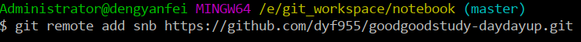
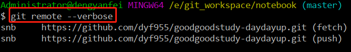
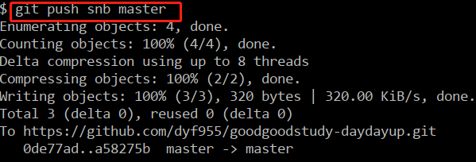
第一次从远程仓库下载代码文件到本地，有两种方式：
一种是download(很简单)；
另一种则是使用git命令，我们介绍的是git命令的方式。
从远程仓库中，找到Clone or download按钮，如下图；
开发人员在自己的工作目录中，打开Git，使用git命令：
git clone 远程仓库URL [选项]：不添加选项参数，则默认在当前目录下，创建和远程仓库名相同的文件夹，并下载文件到该文件夹下。选项如下；注意：clone命令会做三件事情：一是完整的把远程仓库下载到本地，二是创建远程地址别名(前提是要关联了本地本地库和远程仓库)，三是初始化本地库。本地目录：将clone的分支放到指定的本地仓库目录中；b 分支名称 本地目录：指定要克隆的分支，默认是master分支。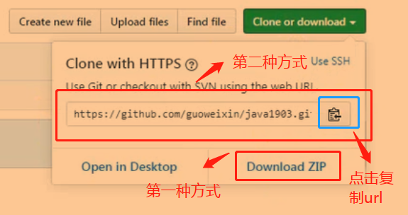
开发人员在修改了代码后，需要上传到GitHub中，但是这时候可能没有权限提交，所以项目经理一般都会将开发人员都邀请加入公司创建的GitHub中，这样开发人员就有权限提交代码到公司的GitHub中了；最后再使用git push命令，push修改过的代码就行了。
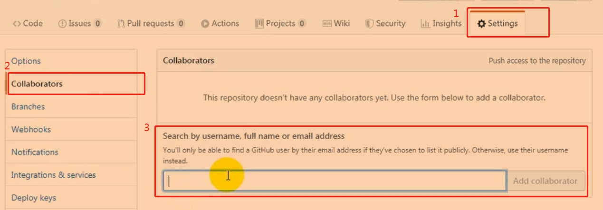
- 如果需要拉取最新版本的文件到本地，则使用：
git fetch [选项]。选项如下：远程仓库的别名：将远程仓库所有分支的最新版本全部取回到本地；远程仓库的别名 分支名：将远程仓库指定分支的最新版本取回到本地。
git pull：从远程仓库获取最新版本并合并到本地；即等同于执行了git fetch和git merge两条命令。效率上git pull更快一些，但是不一定安全，因为git fetch可以进行有选择的合并，所以根据工作中的需求，选择合适的拉取命令方式才是正确的。
- 协同开发冲突问题：在开发者，经常会遇到两个人同时在修改一个文件的问题，即当同事A上传了对C文件的修改后，紧接着同事B也上传了对C文件的修改，此时GitHub就会出现冲突，即不知道该听那个开发者的，C文件中应该使用谁的内容才是正确的，所以为了避免出现这种问题，GitHub规定，出现这种情况时，另一个人应该先更新自己的本地文件，即保证自己本地是最新版本，然后再做修改即可。
注意：解决冲突后，最后提交文件时，不要带文件名，只需要带上提交的说明信息(即-m参数)，直接提交即可。
NO2.4 IDEA工具中使用Git
IDEA默认集成了Git工具。
IDEA中使用Git将项目push到远程仓库，如下列图中所示：
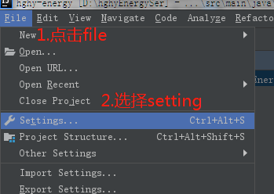
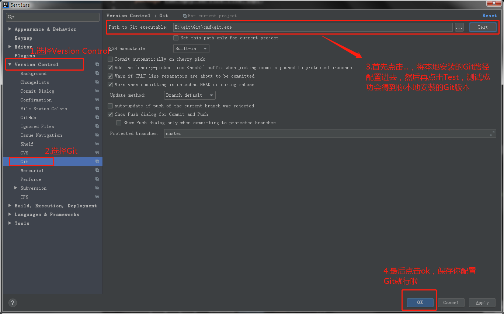
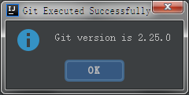
说明：测试成功会出现这个。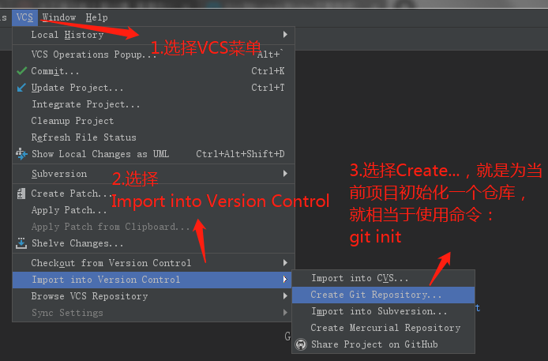
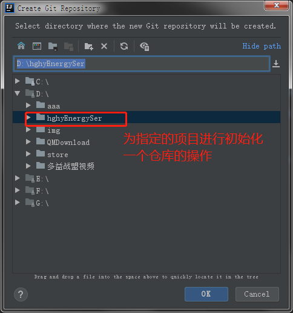
说明：点击Create Git Repository后，会出现如上所示，意思就是我要给这个项目init(也就是创建)一个版本库。
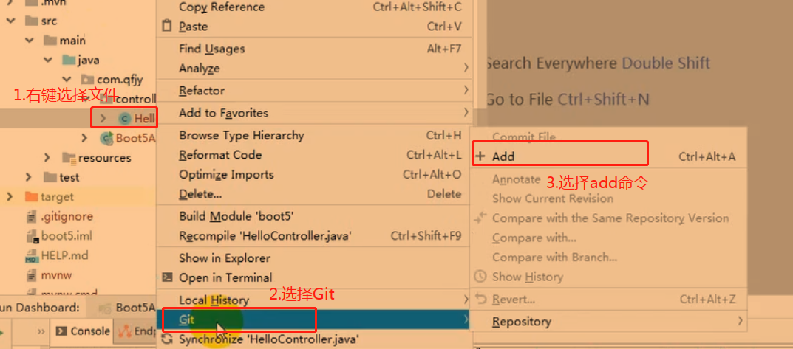
说明：将文件add到暂存区。

`说明：选中项目，将项目add到暂存区。`
说明：进行commit操作，提交到版本库中。
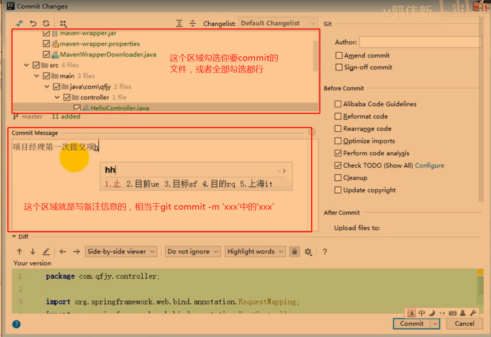

`说明：使用IDEA集成Git，push代码文件到远程仓库；首先，需要配置登录到GitHub的账户，就是你平常登录到GitHub的账号和密码。`
说明：配置远程仓库的url，也就是关联远程仓库。
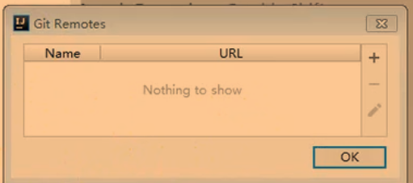
说明：在这里面设置远程仓库的url即可。
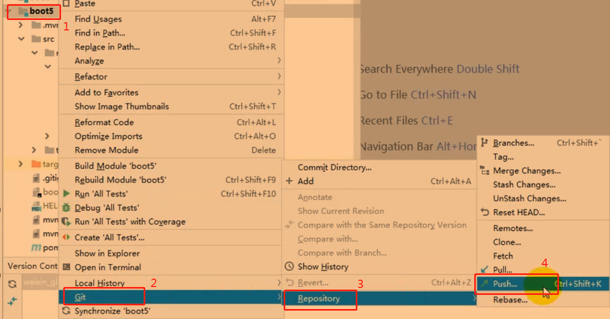
说明：最后，选择push命令就可以将代码push到远程仓库了。
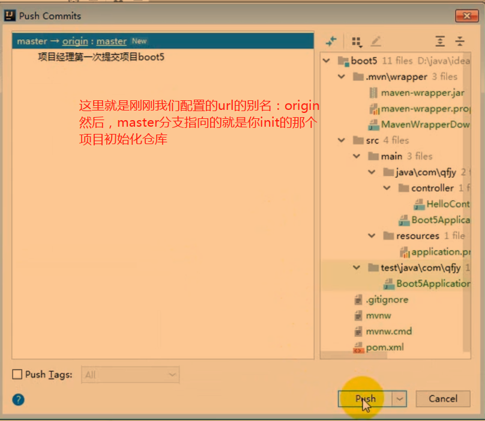
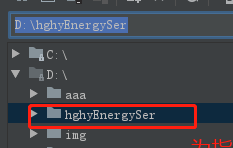
开发人员从远程仓库clone项目代码到本地。
首先在远程仓库里复制一下远程仓库的url；
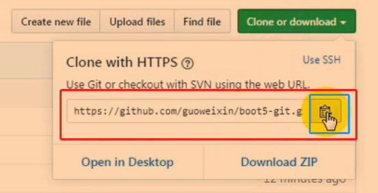
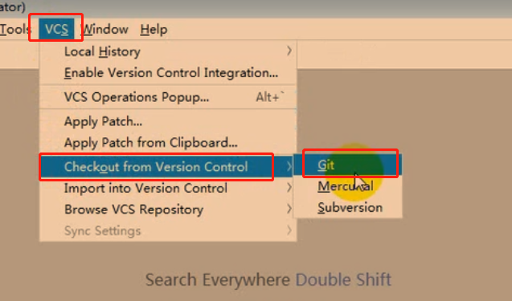
说明：选择VCS，再选择Checkout from Version Control选项，最后选择Git。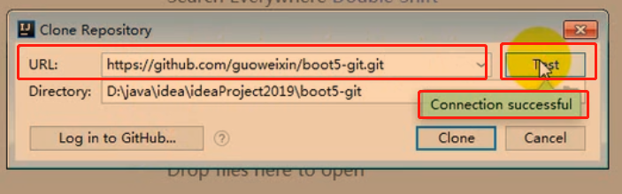
说明：在弹出的框中，填入远程仓库的url，并可以点击Test，测试是否能够连接，连接成功会出现以上绿色框中的提示；其中Directory则是指你要将clone下来的项目文件放在本地哪个位置，最后点击Clone即可；另外当开发人员修改了项目代码之后，需要push项目文件到远程仓库，这个时候也要注意，需要得到远程仓库管理人员的权限邀请，即管理人员没有邀请你的话，你哪怕写好了代码，也是无法提交到远程仓库的；最后，远程仓库默认使用的是Clone时使用远程仓库url。
当别人push了新代码之后，你需要更新自己的本地代码，按下图操作即可。
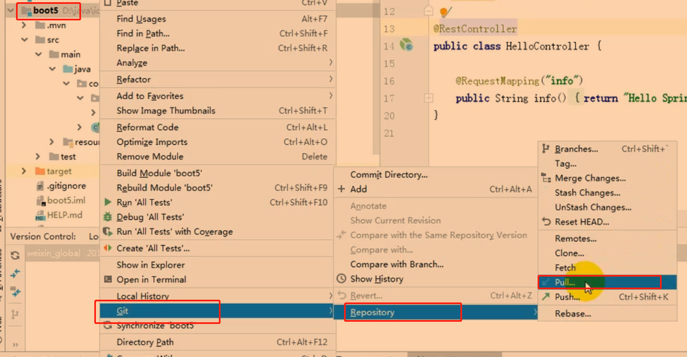
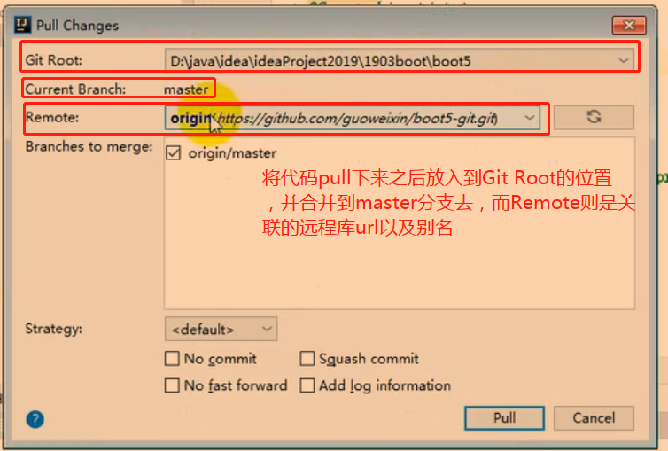
本博客所有文章除特别声明外，均采用 CC BY-SA 4.0 协议 ，转载请注明出处！